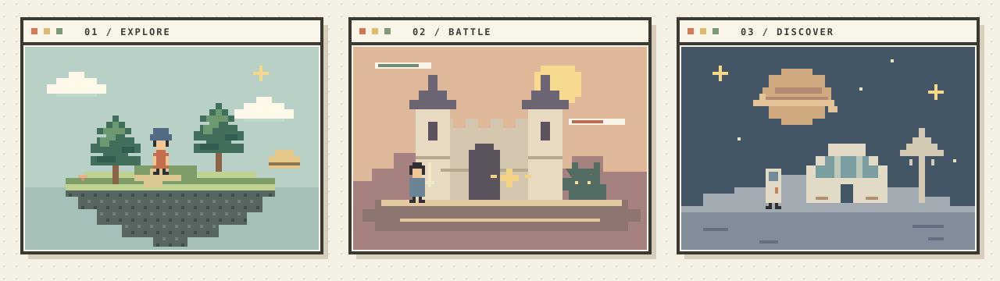

Open source World Model game engine
Create infinite experiences, in minutes.
Give your World Model a memory, an inventory and a playable interface. GENESIS is the dungeon master for your worldstream: it remembers the world, applies the rules and connects player actions to generated scenes.
Apache 2.0 licensed. Bring your own models, or connect the Worldstreams API with one server key.

Your World Model needs a dungeon master.
In a tabletop game, the dungeon master remembers what you carry, who you met and what changed. GENESIS gives infinite experiences that same foundation. Your controller owns the facts; your LLM and World Model receive the context for what happens next.
World memory
Persist inventory, health, quest flags, locations and character relationships in structured state.
Playable worlds
Build custom interfaces, authoritative turns, player seats and crowd decisions around generated scenes.
Connected generation
Validate LLM replies, track asynchronous jobs and carry real scene checkpoints into the next moment.
Describe any world. Start with one prompt.
The included create-world-stream skill helps a coding agent turn your idea into a working prototype: world settings, a custom interface, controller rules, assets and an exportable bundle.
Use the create-world-stream skill to build Mosslight, a forest
battle worldstream with a cream pixel interface. Let two players
take turns, ask the backend LLM for four moves per encounter,
and remember their inventory, health and progress. Give me a
working local preview and an exportable world.Start with labeled fixtures for a local prototype. Connect your chosen models and a generation budget for live media. Learn the agent workflow.
Rick and Morty, together in one worldstream
Watch the multiplayer example: Rick and Morty have their own character controls, and both actions feed the shared experience.
Three files. Your whole world.
my-world/
├── genesis.json World settings, actions, tools and assets
├── interface.html Your interface and player controls
├── controller.js World memory, rules and backend requests
└── assets/ Images, audio and video that travel with youGENESIS coordinates the world; connected providers generate media. Your host supplies identity, storage, credentials and spending policy. Start building.
Choose your connection
| Worldstreams API | Your own World Models |
|---|---|
| One Sequencer server key connects LLM tools, media generation, assets and managed worldstream APIs. | Choose your LLM and World Model, then register their server-side adapters. |
| Connect Worldstreams | Connect your own providers |
The source is Apache 2.0 licensed. Version 0.1 is an unpublished development preview, being polished for launch. Read the license, contribute or explore the SDK API.